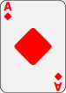
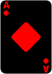

La Cardistry est une forme d'art de la manipulation des cartes à jouer. Son histoire remonte aux premiers jours des cartes à jouer elles-mêmes. Alors que les cartes à jouer sont utilisées depuis des siècles pour les jeux et la divination, la Cardistry se concentre sur les mouvements et les manipulations esthétiques des cartes, plutôt que sur leur utilisation traditionnelle.

La pratique de la Cardistry telle que nous la connaissons aujourd'hui a émergé au cours des dernières décennies. Elle a été influencée par de nombreux artistes, magiciens et amateurs de cartes du monde entier. Cependant, il est difficile de tracer son origine précise en raison de son développement organique et de son évolution au fil du temps.

La popularité de la Cardistry a connu une augmentation significative grâce à Internet et aux médias sociaux. Les vidéos de manipulation de cartes ont commencé à apparaître en ligne, permettant aux artistes de partager leurs créations et de se connecter avec d'autres passionnés de Cardistry à travers le monde. Les réseaux sociaux ont également permis aux artistes de s'inspirer mutuellement, de collaborer et de repousser les limites de cet art.
Aujourd'hui, la Cardistry est devenue une discipline artistique à part entière, avec des milliers de pratiquants passionnés dans le monde entier. Les artistes de la Cardistry créent des mouvements fluides et visuellement captivants en manipulant les cartes à jouer avec adresse et créativité. Ils repoussent constamment les limites de ce qui est possible, créant de nouveaux mouvements, des éventails complexes, des lancers de cartes impressionnants et bien plus encore.
La Cardistry est appréciée pour sa beauté visuelle, son rythme et son esthétique. Elle est souvent utilisée dans les performances de magie, les vidéos artistiques, les publicités et les événements spéciaux. De plus en plus de personnes découvrent et s'engagent dans la Cardistry, apportant leur propre style et leur créativité à cet art en constante évolution.
En résumé, la Cardistry est une discipline artistique moderne qui se concentre sur les mouvements et les manipulations esthétiques des cartes à jouer. Son histoire est marquée par la passion des artistes, l'évolution de la technologie et l'influence croissante des médias sociaux. Aujourd'hui, la Cardistry continue de fasciner et d'inspirer de nombreux adeptes à travers le monde.